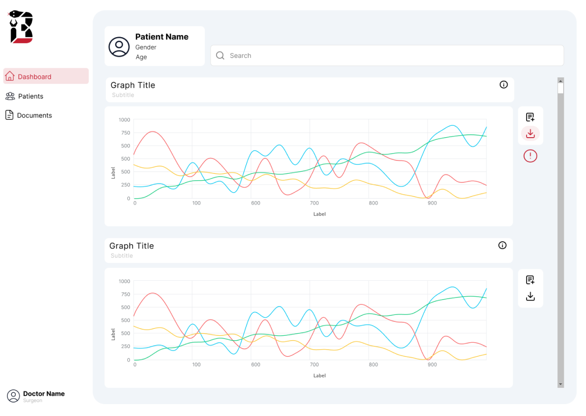

This project (“Patient Care Technologies for Permanent Ambulatory Artificial Lung Support”, Lead PI: Keith Cook) was supported by the US Army/Congressionally Directed Medical Research Programs. It involved the development of a medical device that could gather biometric data from patients. This data would be displayed in a dashboard for medical professionals to use, which was my focus for the project.
UX Design
Web Development
Data Visualization
Database Management
I joined the front-end team of the project in early June 2024. Our task was designing and developing the dashboard application. We went with the Next.js framework to develop the application, which involved a mix of React, Typescript, and Tailwind. For our data visuals, we liked how much functionality could be built into graphs with the D3 library. Lastly, we went with Figma to create mock-ups.
With my interest in graphic design and experience in web development, I designed mocks-up that gave the team a visual representation of the application before we went into coding. This allowed for early feedback on artistic direction and planning on how we would split up the code among the team.

I opted for a clean, minimalist structure and artistic direction after researching existing examples of similar medical applications and
modern design trends used in successful apps like Instagram. This left room to add necessary details to the graphs, like buttons for navigation or alert icons.
By the end of the fall, we had the data viz page coded up and an initial draft of a graph.
Moving into the fall, I refactored the graphs to be more Next.js compatible and implemented them into the webpage. After working with someone
managing the data in AWS S3, our graphs successfully displayed a sample of real experimental data in the dashboard page. From there, add some zooming to the graphs,
host with Vercel, and voilà! (double left click to zoom out)
This application will be crucial for users of the medical device. I'm sure that its simplistic design and functionality will ensure medical professionals can easily explore data they need to make decisions that best address the needs of their patients.